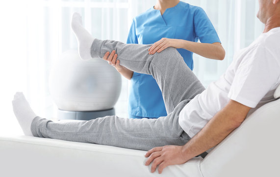
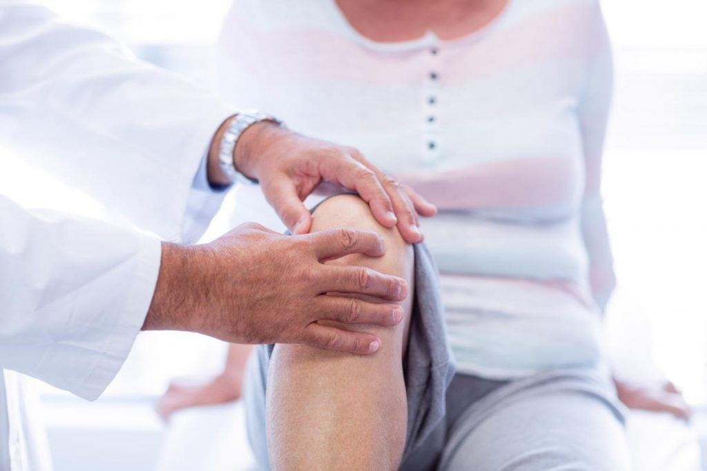
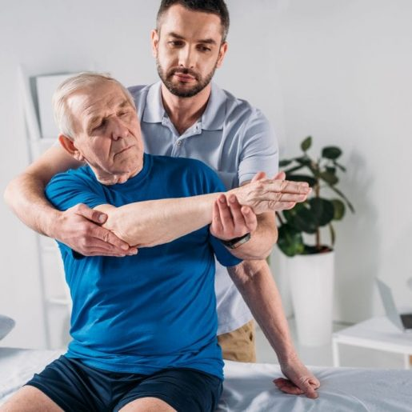
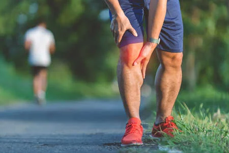
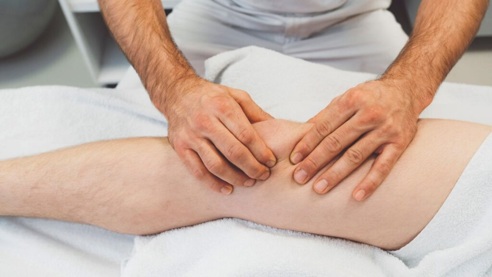

Physiotherapy, also referred to as physical therapy, is an allied health profession that makes use of bio-mechanics or kinesiology, manual therapy, exercise therapy, and electrotherapy, to help patients restore, maintain and increase their physical mobility, strength, and function.
Physiotherapists are better able to help patients regain mobility, as they have a better understanding of how the body works and are trained in clinical skills to assess, diagnose and treat disabilities. Physiotherapists can help patients recover from injuries and disabilities ranging from back pain, neck pain, and knee pain to ligament issues.
Physiotherapy also helps in the rehabilitation of patients suffering from Parkinson’s, Paralysis, Stroke, Multiple Sclerosis, and Cerebral Palsy. Furthermore, physiotherapists can heal both chronic and acute problems by treating patients at home

Orthopedic physiotherapy refers to the treatment of issues associated with muscles & bones and their related injuries or disorders. After an orthopaedic illness or surgery, people often lose their mobility which affects their quality of life. In such cases, physiotherapy offers pain relief, boosts joint range, and enhances strength.
This treatment is often recommended for sprains, strains, post fracture, post surgery and in cases of repetitive injuries.

Geriatric Physical Therapy is a form of physical therapy specifically geared toward older adults and their unique issues and challenges. Geriatric physical therapy takes into account that older adults tend to become less active over time, experience a decrease in muscle strength, coordination, and reaction timing, and have a lower tolerance for physical activity. In virechan, purgation or disposal of toxins happens through the clearing of the bowels. In this treatment too, the patient is given inside and outside oleation and fomentation treatments. From that point onward, the patient is given a natural purgative to encourage clearing of the guts that aides in purifying the body of toxins. Virechan treatment is prescribed fundamentally for pitta -dominated conditions, such as herpes zoster, jaundice , colitis, celiac infection etc.
Geriatric physical therapy is different from other types of physical therapy because it focuses more on building strength and endurance in older adults to help in the following ways:
Keeping Active
1. Preventing deconditioning (reversal of previous conditioning)
2. Preventing muscle atrophy (the wasting away of muscles)
3. Decreasing the risk of falls and related injuries
4. Maintaining independence in performing daily activities

Our certified, experienced and specialized physiotherapists treat various sports injuries right at the comfort of your home. Injuries due to sports accidents are better handled by sports physiotherapists who specialize in sports injuries. Sports physiotherapy is vital for an injury during a sportsman’s career. Timely and effective healing can determine the athlete’s and the team’s success. Sports physiotherapists engage in the management of wounds and also help in preventing injuries that may occur during exercise or sports. They help you get back on feet at the earliest, ensuring complete healing of the affected tissues using latest technology and physiotherapy methods.
Fractures, sprains, strains, dislocation of joints, ligament tear and many other sports injuries are all treated by our trained and experienced sports physiotherapists right in the comfort of your home and at Alovia as well

Neurological physiotherapy treatment refers to the treatment of patients suffering from neurological disorders. Neurological disorders primarily affect the brain, spinal cord, and nerves. This results in the loss of movement, sensation, uncoordinated movement, weak muscles, spasm, tremor, and pain. Neurological physiotherapy helps patients improve mobility and develop proper functioning.
Neuro physiotherapy exercises improve muscle weakness, poor balance and coordination, uncontrolled muscle spasm & tremors, loss of functions and thereby, improve the quality of life of the patient.
Post-operative physiotherapy is the key to a patient’s recovery. This surgery rehabilitation therapy is vital to restoring body strength, motility, and full joint movement & functionality. After undergoing any major surgery such as cardiac surgery, cancer prevention surgery, or orthopedic surgery, physical therapy becomes an absolute requirement. Surgeons highly recommend rehab physical therapy since it can hasten the post-operative recovery as well as reduce any swelling that follows the initial injury. Physiotherapists plan the sessions and exercise programs depending on the different phases of healing and the progress of the patient.
